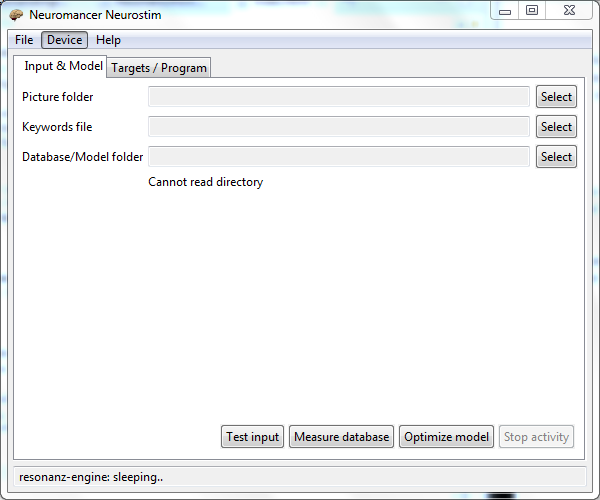

 Neuromancer Neurostim is a tool that tries to induce different mental states and moods and analyze the effect of different pictures and stimulus to a user. Unlike typical brainwave entraintment software, Neuromancer Neurostim uses measurements (EEG) and machine learning methods and models to generate realtime stimulation sequence (currently pictures and keywords) that will try to push brain towards a target state. The aim is try to mimic the way art, music and exciting movies can change watcher's mood.
Currently Neuromancer Neurostim shows and generates real-time slideshows based on measurements. After the stimulation sequence, the program reports brain measurements based numbers telling how well program stayed in target brain states. When comparing the average distance to target EEG values the software gets 18% smaller errors when compared to random stimulus.
In practice, the user selects:
Examples show how to do basic tasks by yourself.
Neuromancer Neuromancer requires 64bit Windows operating system (version 10 or later) and 64bit Java (version 8 or later) (www.java.com) to run. Earlier versions of the software might work too but are not tested.
Currently, Neuromancer requires brainwave measurement device Interaxon Muse to measure how pictures and keywords change brainwaves (and muse-io.exe to send OSC packets). Emotiv Insight support is experimental as it has not been tested with a real device.
Additionally, during a stimulation program Neuromancer keeps all pictures and other media files in memory meaning that you need to have enough RAM for this. For normal use, 4-8 GB of RAM and fast modern CPU is recommended.
Neuromancer Neurostim is freeware. Decompilation, compilation, copying and other use of the source code is prohibited.
Software has been developed by Tomas Ukkonen. For reporting bugs and comments, you can contact tomas.ukkonen@iki.fi.
If you require consultation or other services related to the use of the software or have work offers. I'm more than happy to hear about them.